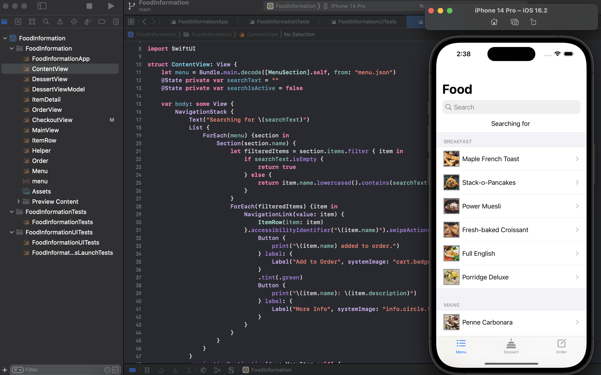

Mobile Food Ordering App
An iOS food ordering app clone developed using Swift and SwiftUI, featuring dynamic menu loading, intuitive user interactions, and comprehensive testing.

Tools and Technologies Used:
- Programming Language: Swift
- Framework: SwiftUI
- Development Environment: Xcode
- Data Source: Remote API (JSON), Local JSON
- Testing: XCTest for Unit and UI Testing
Key Features:
- Multi-View Interface: Implemented separate views for menu browsing, ordering, and checkout processes.
- Tab-Based Navigation: Created an intuitive tab system for easy navigation between different app sections.
- Dynamic Menu Loading: Integrated API calls to fetch and display food items with names and images from an online JSON source.
- Local Data Integration: Utilized local JSON data for additional app functionality.
- Search Functionality: Implemented a search bar allowing users to find specific food items quickly.
- Interactive Order Management: Developed features for adding items to cart, selecting payment methods, and removing items with swipe actions.
- Comprehensive Testing: Wrote and implemented unit tests and UI tests to ensure app reliability and functionality.
Technical Highlights:
- SwiftUI Mastery: Demonstrated proficiency in using SwiftUI for creating responsive and dynamic user interfaces.
- API Handling: Implemented efficient methods for fetching and parsing JSON data from remote APIs.
- State Management: Utilized SwiftUI's state management to handle user interactions and app data flow.
- Custom Components: Created reusable UI components such as custom buttons, dropdown menus, and list items.
- Gesture Recognition: Implemented swipe gestures for enhanced user interactions, such as deleting items from the cart.
Achievements:
- Functional App Clone: Successfully created a working clone of a food ordering app with core functionalities.
- API Integration: Effectively implemented API calls to dynamically populate the app with real-time data.
- User-Centric Design: Developed an intuitive and responsive user interface using SwiftUI.
- Robust Testing Implementation: Created a comprehensive suite of unit and UI tests to ensure app quality and performance.
Lessons Learned:
- iOS Development Workflow: Gained practical experience in the full cycle of iOS app development using Swift and SwiftUI.
- API Integration: Enhanced understanding of working with remote APIs and handling asynchronous data in mobile applications.
- UI/UX Design Principles: Developed a deeper appreciation for user-centric design in mobile app interfaces.
- Testing Methodologies: Learned the importance of comprehensive testing in ensuring app reliability and user satisfaction.
- Performance Optimization: Gained insights into optimizing app performance, especially when dealing with network requests and dynamic content.